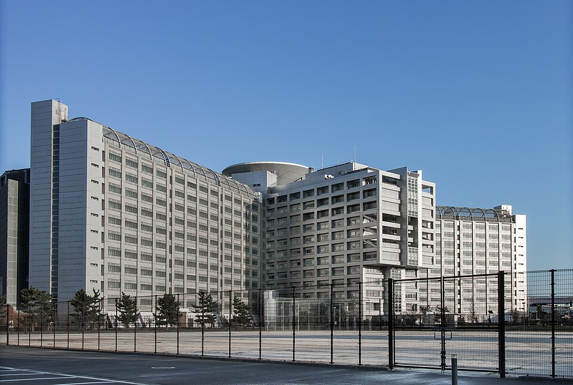

宮
宮崎邦次
みやざき・くにじ
第一勧業銀行元会長・相談役
役割：木島・小池関連融資をめぐる経営トップ
その後：1997年6月29日に自宅で死亡。刑事裁判の確定判決は未確認2
1985年頃〜2002年
第一勧業銀行は、木島力也を介した総会屋との関係を背景に、小池隆一の関連会社へ融資を拡大した。融資は株式取得や証券会社への圧力を支える資金となり、銀行と証券会社の双方で利益供与が問題になった。1
1997年5月の本店捜索と幹部逮捕を契機に、融資の名義と実質的な利用者の相違、検査時の報告。経営トップの判断が捜査の焦点になった。2
大蔵省の行政処分と刑事手続は、第一勧銀だけでなく野村・大和・日興・山一の各証券会社にも及んだ。第一勧銀は2002年にみずほ銀行へ統合されたが、事件全体の終結年は個別事件ごとに異なる。3
第一勧業銀行と総会屋の関係は、1997年の捜索で初めて生成されたものではない。第一銀行と日本勧業銀行の合併前から、第一銀行の井上薫会長、日本勧業銀行の横田郁頭取と。出版社「現代評論社」社長の木島力也との関係が形成されていたと報じられている。木島は大企業の株主総会対策に関わる大物総会屋・財界フィクサーとして、銀行首脳と会食やゴルフ、麻雀を重ねたとされる。1971年に第一勧業銀行が発足した後も、木島と同行首脳の接点は続いた。同行総務部が木島を定期的に訪問し、株主総会をめぐる情報や接遇を扱ったことが、後の融資問題を人間関係の問題へ広げた。14
○内藤説明員 お答え申し上げます。 第一勧業銀行が総会屋の関係者に対しまして融資を行っていたという報道がなされていることは承知しておりますが、捜査当局により当該関係者が別件で逮捕されたということでございますし、現段階におきましてコメントは差し控えたいというふうに考えております。 なお、一般論として申し上げますが、貸し出しを行うに当たりましては、銀行はその業務の公共性にかんがみまして、資金使途、返済財源、債務者の状況などを総合的に勘案して行うものとし、いやしくも社会的批判を招くことのないよう、業務の適正な遂行に十分留意する必要があるものと考えているところでございます。 当局といたしましては、このような考え方を踏まえ、適切に対応してまいりたいというふうに考えております。
意味：事件への直接答弁を避けつつ、融資審査の一般原則を示した政府答弁である。
木島は小池隆一を「隆ちゃん」と呼び、第一勧銀総務部では小池を木島の「まな弟子」と認識していたとされる。小池は1988年以降、第一勧銀の株主総会に毎年出席するようになった。同行が小池に他の総会屋の動きを抑えるよう依頼したと報じられたことから、銀行側が小池を株主総会の対策対象として扱った経緯が確認できる。小池はその翌年の1989年、第一勧銀から得た30億円で野村證券、日興證券、山一證券。大和證券の株式を各30万株取得したとされる。株式取得は株主提案権や株主総会での発言力を得る手段となり、銀行からの融資と証券会社への圧力が接続した。256
第一勧銀と小池側との取引は、1985年頃、小池の弟である小池嘉矩らが経営する小甚ビルディングなどへの融資から拡大したとされる。借り手は小池隆一本人ではなく、弟の会社や関係会社という形式を取った。検察側は、表面上の借り手と実質的な資金需要者が異なる迂回融資だったと主張した。1985年以後の融資は延べ69回、合計約275億円に達したと報じられている。1994年以降には大和信用などを経由した約117億円の迂回融資も問題になった。名義を分ける形式は、融資先の審査と小池の実質的な資金利用を切り離して見せる効果を持ったとされる。37
1992年の株主総会後、第一勧銀の総務担当役員らが木島の事務所を訪問した際、木島から小池の融資について「何とか考えてやってくれないか」と求められたとされる。役員らが追加融資は難しいと説明すると、木島は宮崎邦次会長と奥田正司頭取との会食を求めた。1992年9月4日、銀座の料亭「吉兆」で宮崎、奥田。木島らの会食が行われた。検察はこの会談を、小池関連融資の継続・拡大を決める重要な場と位置づけた。宮崎と奥田が融資を進める方向で判断したと報じられた一方、組織内で誰がどの範囲を承認したかは後の争点になった。52
木島力也は1993年9月2日に肺がんで死亡した。第一勧銀内部には、木島が死亡した以上、小池との融資関係を整理できるという認識があった一方。融資を止めれば小池を怒らせるという恐れも残ったとされる。木島の生前に形成された上下関係と接遇の慣行は、本人の死後も意思決定を拘束したと関係者が説明した。この心理的・組織的な拘束を、関係者は「木島の呪縛」と表現した。融資を続ける担当者、判断をする経営トップ、関係を維持する総務部のそれぞれが。過去の接点を理由として処理を先送りした経緯が事件の中心になった。5
1994年の大蔵省検査では、小池関連会社への貸付残高約40億円について、24億1,000万円が回収不能。4億8,100万円が回収懸念大と評価された。しかし、融資の経緯や小池との実質的な関係を十分に報告しなかったことが、後に銀行法上の検査忌避問題となった。1997年6月の国会質疑では、第一勧銀が1990年と1994年の大蔵省検査に際して小池側融資の隠ぺい工作を行ったと、近藤頭取が認めたとの説明もなされた。検査は資産内容、リスク管理、内部事務管理体制、法令遵守を確認する制度だったが。形式上の融資先だけでは資金の実質を確認できなかった。8910
そもそも小池隆一が「第一勧銀」に深く食い込むことになった起点は、1988年の株主総会に遡る。この株主総会で「頭取」に就任したのが宮崎だった。宮崎が頭取に就任した背景には、小池が師事していた財界のフィクサーで大物総会屋「木島力也」の推薦があったとも言われている。 当時、麹町支店の不祥事やスキャンダルを抱え、株主総会が紛糾しないかと不安に感じていた「第一勧銀」は、小池に円滑な議事進行への協力をこう依頼した。 「ほかの総会屋（野党総会屋）の動きをおさえてもらえませんか」 「第一勧銀」から依頼を受けた小池は「野党総会屋」を封じ込め、「与党総会屋」としての影響力を強めることになり、その翌年の1989年から不正融資がはじまったのだ。同社は小池が野村証券株など4大証券株120万株を購入した際の「31億円」も融資していた。
意味：銀行が総会屋に株主総会対策を依頼したという、関係の緊張を示す記述である。
1997年5月14日。野村證券の元幹部と小池隆一が逮捕された。5月20日には東京地検特捜部が第一勧業銀行本店を捜索し、銀行の融資と証券会社への利益供与の関係が捜査線上に現れた。6月5日には第一勧銀の前常務・現取締役ら4人、6月10日には元役員4人、6月13日には藤田一郎副頭取が逮捕された。宮崎邦次と奥田正司は6月27日に事情聴取を受け、宮崎は6月29日に自宅で死亡した。奥田は7月4日に逮捕された。大蔵省は7月25日に第一勧銀と元役員4人を銀行法上の検査忌避に当たるとして東京地検に告発し、7月30日には一部業務停止命令と業務改善命令を出した。1121213
捜査が銀行本店から経営トップへ広がる過程では、融資を実行した担当者だけでなく、会食を設定した人物、融資継続を判断した人物。検査資料を確認した人物の役割が問われた。宮崎の死亡により、本人の判断や当時の会話を法廷で確認できる範囲も限定された。行政処分は新規融資開拓の停止と営業拠点新設の制限を伴い、銀行の業務運営そのものに影響した。事件は個別の逮捕者を生んだだけでなく、銀行が総会屋との関係をどの部署で管理し、誰がその関係を終わらせる権限を持つかという組織上の問題を残した。13
1997年10月、東京地検は山一證券の元社長らを損失補塡・商法上の利益供与で、小池隆一を証券取引法違反・商法上の利益受供与で起訴したと法務省幹部が国会で説明した。その後、第一勧業銀行、野村證券、大和證券、日興證券。山一證券の各社で刑事裁判が続いた。個別の被告について、判決日や量刑が本調査で確認できないものも残る。1998年以降は金融監督庁の設置など、金融行政と検査・監督機能を大蔵省から分離する改革が進んだ。第一勧業銀行は富士銀行、日本興業銀行と共同持株会社みずほホールディングスを設立し、2002年にみずほ銀行へ統合された。ただし、この統合を事件の刑事上の終結とみなすことはできない。14153
事件の責任は、融資の名義、実質的な資金利用、株主総会対応、検査への報告。証券会社の利益供与という複数の経路に分かれて現れた。銀行幹部の逮捕、総会屋側の起訴、証券会社幹部の起訴、行政処分は同じ手続ではなく。判決や処分の確認状況も一様ではない。だからこそ、確認できた逮捕や告発と、判決本文が未確認の事項を分けて記録する。1412

| 第一勧業銀行本店（旧） | 東京都千代田区内幸町1丁目 | 1997年5月20日に東京地検特捜部の捜索を受けた本店 | 18 |
| 東京地方検察庁 | 東京都千代田区霞が関1丁目 | 事件の捜査・起訴を担当 | 28 |
| 東京地方裁判所 | 東京都千代田区霞が関1丁目 | 小池・銀行・証券会社関係者の刑事裁判 | 30 |
| 銀座「吉兆」周辺 | 東京都中央区銀座 | 1992年9月4日の融資要請会談の場所とされた | 21 |
| 帝国ホテル東京 | 東京都千代田区内幸町1丁目 | 宮崎・奥田が事情聴取前に滞在したと報じられる | 21 |
| 杏林大学病院 | 東京都三鷹市新川6丁目 | 宮崎が搬送された病院 | 21 |
| 東京拘置所 | 東京都葛飾区小菅1丁目 | 小池ら被告の勾留・取調べに関係 | 30 |
融資は小池隆一本人ではなく弟の会社や関係会社を名義上の借り手とし、迂回融資を含む経路で小池側の証券取引を支えたと検察側が主張した。小池は1989年頃、4大証券各社の株を各30万株取得したとされ、株主総会での発言力と損失補塡・利益供与の要求が接続した。36
みやざき・くにじ
第一勧業銀行元会長・相談役
役割：木島・小池関連融資をめぐる経営トップ
その後：1997年6月29日に自宅で死亡。刑事裁判の確定判決は未確認2
第一勧業銀行元会長・元頭取
役割：1992年の融資決定や迂回融資に関与したと検察が主張
その後：1997年7月4日に逮捕。最終判決の詳細は未確認11
総会屋
役割：第一勧銀から資金を得て証券会社株を取得し、損失補塡・利益供与を受けたとされた
その後：証券取引法違反・商法上の利益受供与で起訴。実刑判決を受けたと報じられる31
現代評論社社長・総会屋・財界フィクサー
役割：小池を第一勧銀首脳に引き合わせ、融資を口利きしたとされる
その後：1993年9月2日に肺がんで死去5
第一勧業銀行副頭取
役割：小池関連融資に関与した銀行幹部
その後：1997年6月13日に逮捕11
小池隆一の弟・関連会社経営者
役割：第一勧銀融資の名義人の一人とされる
その後：その後の処分は未確認7
第一勧業銀行相談役
役割：小池側取引の発端について説明した人物
その後：その後の刑事処分は未確認3
野村證券元社長
役割：総会屋利益供与事件で逮捕された証券会社トップ
その後：確定判決の詳細は未確認11
山一證券社長
役割：総会屋利益供与事件で起訴対象となった証券会社トップ
その後：判決詳細は未確認32
第一銀行元会長
役割：木島と合併問題を通じて関係を持ったと報道
その後：事件当時は故人1
日本勧業銀行元頭取
役割：木島と親密だったと検察側資料に記載
その後：事件当時は故人4
戦後の右翼・政財界フィクサー
役割：木島の人脈の前段に位置したと報道。事件への直接関与は未確認
その後：1984年に死亡5
国際興業社主・政商
役割：木島の政財界人脈の一部として報道
その後：第一勧銀事件への直接関与は未確認5
大物総会屋
役割：木島の総会屋人脈の一人として報道
その後：第一勧銀事件への直接関与は未確認5
法務省刑事局長
役割：国会で小池事件の起訴状況を説明
その後：1997年11月25日に政府側答弁者14
大蔵大臣
役割：国会で第一勧銀事件と大蔵省検査について答弁
その後：第一勧銀の不正融資把握について答弁した10
相関図は、木島力也を介した総会屋人脈、第一勧銀の経営トップ、小池側の融資名義人、証券会社。捜査・行政を分けて示す。闇社会や総会屋との接点は underworld として表示する。
師弟。木島は小池を「隆ちゃん」と呼び、第一勧銀内部では小池が木島の「まな弟子」と認識されていた。小池が第一勧銀や証券会社に接近する際の人的な橋渡しになったとされる。https://kanagawa-u.repo.nii.ac.jp/record/1628/files/kana-14-16-17-0010.pdf17
庇護・口利き。1992年の吉兆会談で小池関連融資を要請したとされ、宮崎は融資する方向で考える判断をしたと報じられる。https://newsdig.tbs.co.jp/articles/-/1240932?display=121
庇護・口利き。木島は奥田との会食を要求し、第一勧銀トップ同士で小池関連融資を判断する場を作ったとされる。https://newsdig.tbs.co.jp/articles/-/1240872?display=118
盟友。第一銀行と三菱銀行の合併問題を通じ、木島が井上側に協力したと報じられる。ただし、具体的な金銭授受は未確認。https://news.cube-soft.jp/article/410945316
盟友。第一銀行・日本勧業銀行の合併前から、木島と銀行首脳が親密だったと検察側資料に記載される。https://kanagawa-u.repo.nii.ac.jp/record/1628/files/kana-14-16-17-0010.pdf17
庇護・口利き。総務部幹部が木島を定期的に訪問し、ゴルフ・飲食・麻雀などで接遇したとされる。https://kanagawa-u.repo.nii.ac.jp/record/1628/files/kana-14-16-17-0010.pdf17
上司と部下。宮崎は会長、奥田は頭取として、1992年の融資判断に関与したと報道される。https://newsdig.tbs.co.jp/articles/-/1240932?display=121
上司と部下。奥田ら経営トップの下で、藤田副頭取らが小池関連融資に関与したとされる。https://shashi.shibusawa.or.jp/details_nenpyo.php?query=%E5%B0%8F%E6%B1%A0%E9%9A%86%E4%B8%80&sid=312023
資金の出し手と受け手。小池が野村株を取得し、野村側から損失補塡・利益供与を受けたとして起訴された。https://seiji-db.jp/statements/2671464/28
資金の出し手と受け手。4大証券株の取得を背景に、各社の株主総会・取引に影響力を行使したとされる。https://dl.ndl.go.jp/view/prepareDownload?contentNo=1&itemId=info%3Andljp%2Fpid%2F889991433
対立・確執。宮崎は事情聴取の2日後に自殺した。捜査と自殺の因果関係について公的に確定された判断は未確認。https://newsdig.tbs.co.jp/articles/-/1240932?display=121
庇護・口利き。木島が児玉の側近だったと報じられるが、第一勧銀事件への具体的な指示・資金関与は未確認。https://newsdig.tbs.co.jp/articles/-/1240872?display=118
盟友。木島の政財界人脈の例として報道されるが、事件の融資への直接関与は未確認。https://newsdig.tbs.co.jp/articles/-/1240872?display=118
盟友。木島と大手企業の株主総会対策で接点があったと報じられるが、第一勧銀融資への直接関与は未確認。https://newsdig.tbs.co.jp/articles/-/1240872?display=118
対立・確執。1994年検査で不良債権性が問題となり、1997年には検査忌避で告発された。https://www.nta.go.jp/about/organization/ntc/kenkyu/ronsou/78/06/01.pdf25
そもそも小池隆一が「第一勧銀」に深く食い込むことになった起点は、1988年の株主総会に遡る。この株主総会で「頭取」に就任したのが宮崎だった。宮崎が頭取に就任した背景には、小池が師事していた財界のフィクサーで大物総会屋「木島力也」の推薦があったとも言われている。 当時、麹町支店の不祥事やスキャンダルを抱え、株主総会が紛糾しないかと不安に感じていた「第一勧銀」は、小池に円滑な議事進行への協力をこう依頼した。 「ほかの総会屋（野党総会屋）の動きをおさえてもらえませんか」 「第一勧銀」から依頼を受けた小池は「野党総会屋」を封じ込め、「与党総会屋」としての影響力を強めることになり、その翌年の1989年から不正融資がはじまったのだ。同社は小池が野村証券株など4大証券株120万株を購入した際の「31億円」も融資していた。
意味：銀行が総会屋に株主総会対策を依頼したという、関係の緊張を示す記述である。
公的資料や報道で示された中心は、木島力也と小池隆一の総会屋関係、木島と第一勧銀首脳の長年の接触。証券会社株の取得である。児玉誉士夫、稲川会幹部、東声会、政治家、海外口座との関係は、事件への直接関与や資金移動が未確認のものを含むため。確認水準を分けて示す。
木島力也・小池隆一 指摘
木島力也・井上薫・横田郁・宮崎邦次ら 指摘
木島力也・児玉誉士夫 報道
木島力也・稲川会幹部 報道
木島力也・町田久之・東声会 報道
小池隆一・野村・日興・山一・大和 確認できない
具体的政治家・金額・口座 疑惑
具体的口座・法人 確認できない
今回の事件は総会屋というやみの世界の人脈と第一勧銀、野村が長期に関係を持ってきた、その中で起こってきた不祥事だということはもう言うまでもないと思うわけです。既に第一勧銀が大蔵省の九〇年と九四年の二回の検査に際して、不良債権化していた総会屋側への融資の隠ぺい工作を行っていたという事実を大蔵検査回避という言い方で近藤頭取自身が認めたわけであります、参考人質疑で。 まさに大蔵省の検査で総会屋の小池隆一容疑者への回収不能債権など異常な融資が発覚するのを強く恐れての組織ぐるみの偽装工作ではないかと思うわけでありまして、そういう工作をしたことは極めて重大だというふうに思うわけですが、問題は大蔵省がこんなことをされて黙っているのかということであります。
意味：国会議員が、融資隠蔽を「組織ぐるみの偽装工作」と位置づけている。
| 小池隆一 | 30億円 | 0億円 | 証券取引資金と株主総会での影響力を得たとされた。逮捕・起訴・実刑判決 | 31 |
| 木島力也 | 0億円 | 0億円 | 総会屋・フィクサーとしての影響力を得たと報じられるが、発覚前に死亡 | 5 |
| 第一勧業銀行経営陣 | 0億円 | 0億円 | 短期的な株主総会の対立回避と引き換えに刑事責任・行政処分 | 36 |
| 第一勧業銀行 | 0億円 | 275億円 | 不良化した融資、信用低下、業務停止・改善命令。個別損失総額は未確認 | 13 |
| 証券会社 | 0億円 | 0億円 | 利益供与・損失補塡を行ったとされ、幹部逮捕・行政処分・信用低下 | 14 |
| 株主・預金者・債権者 | 0億円 | 0億円 | 企業価値、銀行の信用。内部管理不備を負担。直接損失額は未確認 | 36 |
| 国民・納税者 | 0億円 | 0億円 | 事件単独の公的資金投入と直接負担は未確認 | 15 |
| 東京地方裁判所 | 未確認 | 実刑判決を受けたと報じられる。量刑・確定日は未確認 |
証券取引法違反・商法上の利益受供与。判決本文未確認31
| 未確認 | 1997-07-04逮捕 | 判決の確定内容は未確認 |
第一勧銀の小池関連融資に関する事件。判決本文未確認37
| 未確認 | 1997-06-13逮捕 | 判決内容は未確認 |
第一勧銀の小池関連融資に関する事件。判決本文未確認37
| 東京地方検察庁への告発 | 1997-07-25 | 法人の判決・罰金額は未確認 |
銀行法上の検査忌避。判決本文未確認12
| 未確認 | 1997年 | 起訴。個別の確定判決一覧は未確認 |
損失補塡・商法上の利益供与等。個別判決未確認14
| 大蔵省 | 1997-07-30 | 一部業務停止命令。個人向けを除く新規融資開拓を年末まで停止し、営業拠点新設を1年間制限 |
銀行法に基づく業務停止・業務改善。行政処分13
| 大蔵省 | 1997-07-30 | 一部業務停止命令・業務改善指示 |
証券取引法に基づく業務停止・業務改善。行政処分13
| 未確認 | 未確認 | 請求の全体、判決、和解金額は確認できず |
損害賠償請求。未確認36
「第一勧銀捜査班」キャップは、大分地検次席検事から戻ったばかりの大鶴基成（32期）だった。 午前9時、検察庁前の日比谷公園に集合していた検事、検察事務官100人の隊列が、大鶴を先頭に日比谷通りを渡った。そして「第一勧銀本店」に強制捜査に踏み切った。前例のない14時間半にもわたる入念な家宅捜索が行われ、深夜の第一勧銀本店からは、ダンボール600個分の証拠物が押収された。 大手都市銀行のエスタブリッシュメント「第一勧銀」に東京特捜部が強制捜査に乗り出すのは前代未聞だった。日本経済の血流に直結する金融機関に特捜部のメスが入ったのである。 しかも、同社がたった一人の総会屋「小池隆一」に融資していた金額は想像をはるかに超えていた。 この事件で第一勧銀は前会長の奥田正司ら11人の幹部が商法違反（利益供与）で有罪となった。認定された融資額は、1994年から1996年までの間、本体や関連ノンバンクの「大和信用」を使って不正融資された「117億円」に上った。 同社がのちに発表した社内調査によると、小池に対する融資は1985年から始まり、「大和信用」からの「う回融資」は総額「186億円」、第一勧銀本体からの融資は「274億円」に上っていた。 つまり、11年あまりの間に第一勧銀から総額「460億円」ものカネが湯水のごとく、反社会勢力とされる「総会屋」小池隆一側に流れ込んでいたのだ。
意味：捜索の異例性と、長期間・巨額の融資が同時に描かれている。
「総会屋の元出版社社長の『呪縛』が解けず、歴史のふちにわだかまった「おり」から決別できなかった」 1997年5月23日、東京・内幸町の第一勧銀本店22階、辞任を表明した頭取はこう語った。元出版社社長というのは前述の通り、大物総会屋、木島力也のことである。 第一勧銀は、すでに小池隆一側への「117億円」の不正融資が明らかになり、本店などが特捜部の家宅捜索を受けていた。会見には当時会長の奥田正司もいた。 頭取の口から出た「呪縛」という言葉は、第一勧銀と総会屋の関係を象徴する言葉として、当日夕方のニュース番組のトップ項目の「見出し」に踊った。「呪縛」は1997年を象徴するその年の「流行語」にもなった。 第一勧銀から小池隆一への巨額の不正融資。この事情を知るキーマンは相談役で元会長の宮崎邦次と、前会長の奥田正司だった。総会屋との関係を断ち切れなかった「呪縛」をひもとく捜査のカギはこの2人が握っていた。
意味：頭取会見の言葉が、銀行と総会屋の関係を「呪縛」として表象した箇所である。
そもそも小池隆一が「第一勧銀」に深く食い込むことになった起点は、1988年の株主総会に遡る。この株主総会で「頭取」に就任したのが宮崎だった。宮崎が頭取に就任した背景には、小池が師事していた財界のフィクサーで大物総会屋「木島力也」の推薦があったとも言われている。 当時、麹町支店の不祥事やスキャンダルを抱え、株主総会が紛糾しないかと不安に感じていた「第一勧銀」は、小池に円滑な議事進行への協力をこう依頼した。 「ほかの総会屋（野党総会屋）の動きをおさえてもらえませんか」 「第一勧銀」から依頼を受けた小池は「野党総会屋」を封じ込め、「与党総会屋」としての影響力を強めることになり、その翌年の1989年から不正融資がはじまったのだ。同社は小池が野村証券株など4大証券株120万株を購入した際の「31億円」も融資していた。
意味：銀行が総会屋に株主総会対策を依頼したという、関係の緊張を示す記述である。
○内藤説明員 お答え申し上げます。 第一勧業銀行が総会屋の関係者に対しまして融資を行っていたという報道がなされていることは承知しておりますが、捜査当局により当該関係者が別件で逮捕されたということでございますし、現段階におきましてコメントは差し控えたいというふうに考えております。 なお、一般論として申し上げますが、貸し出しを行うに当たりましては、銀行はその業務の公共性にかんがみまして、資金使途、返済財源、債務者の状況などを総合的に勘案して行うものとし、いやしくも社会的批判を招くことのないよう、業務の適正な遂行に十分留意する必要があるものと考えているところでございます。 当局といたしましては、このような考え方を踏まえ、適切に対応してまいりたいというふうに考えております。
意味：事件への直接答弁を避けつつ、融資審査の一般原則を示した政府答弁である。
これまでもマスコミその他を通じまして、野村証券の総会屋企業への利益の不正提供事件の出発点にこの勧銀の不正融資があったということは報じられていますし、あなたの管轄下にある証券監視委員会がそれは摘発しているわけでしょう。 ○山口政府委員 第一勧業銀行が総会屋の関係者に対して融資を行っていたこと等については、既に調査を指示しているところでございますが、その内容につきましては、大臣が申し上げましたとおり、現在捜査当局により捜査が行われているところでございまして、コメントは差し控えさせていただきたいと思います。 いずれにせよ大蔵省としては、捜査状況を見守りつつ適切に対処してまいる所存でございます。 ○木島委員 捜査当局に任せる、私は、銀行法の所管省大蔵省としては全く無責任だと思います。やはりそこに私は、大蔵省と銀行業界との癒着というのを見ざるを得ないのです。
意味：行政側の「捜査中」をめぐり、国会で癒着と責任が正面から追及された。
今回の事件は総会屋というやみの世界の人脈と第一勧銀、野村が長期に関係を持ってきた、その中で起こってきた不祥事だということはもう言うまでもないと思うわけです。既に第一勧銀が大蔵省の九〇年と九四年の二回の検査に際して、不良債権化していた総会屋側への融資の隠ぺい工作を行っていたという事実を大蔵検査回避という言い方で近藤頭取自身が認めたわけであります、参考人質疑で。 まさに大蔵省の検査で総会屋の小池隆一容疑者への回収不能債権など異常な融資が発覚するのを強く恐れての組織ぐるみの偽装工作ではないかと思うわけでありまして、そういう工作をしたことは極めて重大だというふうに思うわけですが、問題は大蔵省がこんなことをされて黙っているのかということであります。
意味：国会議員が、融資隠蔽を「組織ぐるみの偽装工作」と位置づけている。
最後に、今回の証券・金融不祥事、証券のトップの野村、そして銀行、都市銀行のついこの間までは預金量トップであった第一勧銀、この証券、銀行のトップ同士の不祥事ということで、大変私は、これからの日本の金融改革、自由化について大きな暗雲が垂れ込めてきた、何とかこれを乗り切らなければならない、このように思うわけです。 （中略） 大銀行が総会屋に、総会屋というのが反社会的なものであるということはもう明白でしょう、そういう総会屋に、事実上の無担保でノンバンク含めて三百億の巨額融資をする。
意味：大銀行による融資を、総会屋の反社会性と無担保・巨額性の組合せで批判している。
総会屋・小池隆一被告が，まず，第一勧銀の株式を取得して株主となり，その圧力で第一勧銀から巨額の融資を受けた。その際，後ろ楯として証券界・金融業界ににらみをきかしていた師と仰ぐ元出版社社長が，第一勧銀側に購入資金の融資の口利き役を果たしたといわれる。 そして，小池被告は，その借入金で四大証券各社の株式を各30万株ずつ取得し，役員人事など重要議案提案権が認められる「株主提案権をもつ株主」となった（1989年２月）。 次いで，総会屋・小池被告は，株主総会に向けて「質問状を送付」し，圧力をかけた。当時，証券四社側にとって，92年６月の株主総会は、先立つ91年の証券不祥事発覚後の経営刷新に伴う新体制と初の株主総会を控え，神経をとがらせ，なんとか「混乱を避けたい」という共通の思いがあった時期であった。 総会屋・小池被告の揺さぶりに対処して，株主総会や裏社会対策担当の総務担当役員（四大証券総務担当の水面下の四水会で裏情報交換）が仲介する形で，社長や副社長などの上層経営陣と総会屋・小池被告とが面談の場をもった。総会屋は質問状の取り下げと引き替えに「一任勘定取引」（証券取引法第五〇条で禁止されている）を要求した（今回の場合は，例えば「一割の利回りを保証」させた）。
意味：株式取得や総会圧力と経営陣との面談及び違法取引要求が一続きに記録される。
以上が本件の第一勧銀・四大証券と総会屋グループとの金融腐敗の構図であった。 （中略） 本事件では，商法や証券取引法違反容疑が問われている。主要な関係条文を列記すると次のようである。 （中略） 市場ルールを冒し，“証券市場の信頼性”が問われている。企業の経営倫理が問われている。企業の経営倫理はどうなっていたのか，なぜ，商法や取商法違反と知りながら不正取引を行ったのか，個人の倫理と組織の倫理に乖離があったのではないか，業界や会社の倫理意識（業界や会社の論理）と一般社会の倫理意識との間にズレがあったのではないか。 「会社のため」，「会社を守るため」なら不正行為，違法行為も見過ごす悪弊が日本の企業社会にありはしないか。
意味：事件を個人犯罪だけでなく、企業倫理と組織論の問題として整理している。
そもそもこういった事件を引き起こす日本社会の構造に問題はないか，小池隆一容疑者以外も総会屋へ利益供与していなかったか，総会屋は，会社毎に，与党の総会屋と野党の総会屋があり，裏では談合して手を結び，利益を分け合っているいう。日本的談合社会の現れではないか，この国の企業全体が闇の勢力との関係清算に直面しており，企業は過去のしがらみを根だやしするか，企業の未来を食いつぶすかの瀬戸際に立っているのではないかが問われている。 “企業の自浄力”，“チェックシステム”が問われている。経営の理念や行動基準が不明確ではなかったか，個人の責任をできるだけあいまいにする日本的風土に根ざしていないか，不正行為に対する企業の自浄作用や，チェック体制，社内管理体制はどうなっていたのか，総会屋関連企業との付き合いを断ち切る機会はなかったか，なぜこんな深みにはまったか，社内の自浄作用はなぜ働かなかったか。事件に際しての社内調査や対応も不十分でスピードが鈍かったのはなぜか，社内に隠蔽体質があるのではないか。 経営陣はなぜ総会屋と闘う意志を欠いていたのか，そもそも経営陣の選び方に問題がなかったか，抜本改革の資質に欠ける人物が，過去の不祥事件や旧態温存の順送り人事で経営者に座ってきたのではないか，なぜ，元社長，会長，相談役が陰の影響力を及ぼし続けたのか。
意味：組織の自浄作用の不在と、元経営者の影響力を問題の核心としている。
そもそも，なぜ総会屋へ利益供与するのだろうか。総会屋への利益供与の理由は，（１）株主総会対策のほか，流通業界などの新規出店や食品業界の製造物責任（PL）など利害調整の依頼など，会社が総会屋を利用してきた，（２）トップや総務担当が総会屋と癒着し，弱点を握られ，“腐れ縁”を切った際の反発も恐れて（総会屋がこわかった）――などとされてきた。最近は，（３）「総会屋担当者が予算を維持し，自己のポストを守るために利益供与を続けている」例もあるといわれる。 大蔵省がはぐくんだ腐敗の土壌で行政的規制がきかないことに原因がある（“行政的規制”が原因）。検査・監督の不徹底と虚偽報告，接待と天下りの問題がある。
意味：利益供与を続ける心理と、行政検査・監督の不徹底を併記している。
１．今回の第一勧業銀行、および野村證券の一連の違法行為は、金融機関、証券会社としての信頼を著しく失墜させるものであり、極めて遺憾である。 ２．このため、日本銀行は、本日、第一勧業銀行、および野村證券に対し、再発防止に向けて内部管理体制の整備等必要な改善措置を早急に講ずるよう強く求めたところである。今後、第一勧業銀行、および野村證券から、具体的な改善措置について報告を受けるとともに、その後の実施状況を確認していく考えである。 ３．日本銀行としては、今回の事件により第一勧業銀行、および野村證券の財務内容の健全性が大きく損なわれることはないと受け止めているが、一刻も早く不正再発防止のための体制が整えられ、内外からの信認が取り戻されることを、強く期待している。
意味：日本銀行が事件を、財務問題だけでなく信用と内部統制の問題として扱ったことが分かる。
東京地裁は判決で小池被告をこう断罪した。 「執拗に、本来ならば到底得られない利益を要求した悪辣な犯行。証券市場の公平性に対する信頼もいちじるしく傷つけた。与党総会屋として議事進行に協力する姿勢を示す一方で、（小池被告が）敵対的な行動に出た場合には、不測の事態が生じかねないと（相手を）危惧させた巧妙な犯行だ」 その一方で、判決は企業側の責任にも言及した。 「株主総会を短時間で平穏に終了したいという、安易な姿勢をあらためることができなかったため、つけこまれた面がある」 （中略） 4大証券に送りつけた「株主提案権行使」の通告については、「総会屋と会社の総務担当は持ちつ持たれつ」だと強調した。
意味：判決理由として報じられた小池側の悪質性と、企業側の安易な総会対策の双方を示す。
金融監督庁の設置など、大蔵省から金融行政を分離し、検査・監督機能を強化する改革が進んだ。15
日本銀行は第一勧銀に内部管理体制とリスク管理の強化を求めた。36
銀行・証券会社が総会屋への接待・利益供与を組織的に行わないことがコンプライアンス上の課題となった。13
融資の実質的関係や不良債権性を検査で隠す行為について、銀行法違反として告発・処罰する運用が示された。12
現在の反社チェック・取引遮断に事件が直接どの程度因果したかは、今回確認した資料だけでは特定できない。15
第一勧銀側：融資先は小池隆一本人ではなく、弟の小池嘉矩や小甚ビルディングなどの法人であり、同行は小池本人への融資をしていないという説明があった。38
検察側：名義上の借り手と実質的な資金需要者が異なる迂回融資であり、木島・小池との関係を背景に銀行トップが融資を決めたと主張した。4
第一勧銀側：現場担当者の融資判断として説明できるという形式面が示された。38
検察側：宮崎邦次・奥田正司ら経営トップの承認・黙認があり、組織の判断として融資が継続したと主張した。2
確認できる事実：宮崎が1997年6月29日に自宅で死亡したことは確認できる。2
未確認の主張：捜査官の圧力が直接原因だったと公的に確定した資料は確認できない。2